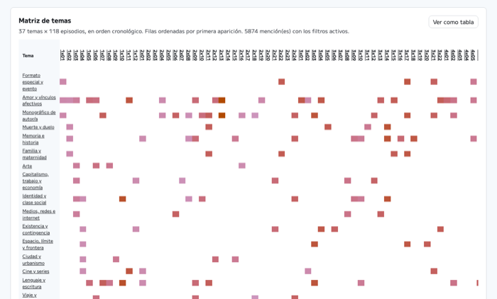

Punzadas Sonoras es mi podcast favorito: me fascina cómo Inés y Paula eligen los temas y cómo los abordan. Siempre quise una biblioteca con las obras, autoras y referencias de sus más de 100 episodios, así que la he construido.
Las descripciones oficiales de los episodios solo cuentan una fracción de lo que realmente se cita. ¿Y si se pudiera buscar cualquier autora, obra o tema mencionado en el podcast, con la cita exacta y el minuto en el que se dijo?
Universo Punzadas nació de esa pregunta. Cataloga cada referencia cultural citada en los 118 episodios del podcast: libros, películas, discos, autoras, autores y los temas que las conectan.
Cada episodio se transcribe y se lee entero, palabra por palabra. Solo entra en el catálogo lo que se puede señalar con una cita literal en el audio — nada se completa por conocimiento externo.
Las transcripciones se generan con mlx-whisper (modelo large-v3) y diarización con pyannote 3.1, corriendo en local. La extracción de referencias — qué se cita, quién lo cita y en qué episodio — se hace a mano, leyendo la transcripción completa con un criterio editorial documentado.
Búscalo directamente aquí: por autora, obra, tema o episodio, con gráficos que conectan las referencias entre sí.
Si no carga arriba, puedes abrirlo en una nueva pestaña.
Universo Punzadas junta dos cosas que me encantan: escuchar el podcast y construir herramientas de datos. Es un proyecto que exige paciencia — horas de audio escuchadas y transcritas — y cuidado editorial: cada dato tiene que poder señalarse con una cita literal.
Para mí representa lo que más me gusta de trabajar con datos: convertir algo disperso y difícil de encontrar en algo navegable, buscable y compartido.
Cada episodio nuevo recorre el mismo proceso, de principio a fin:
Universo Punzadas es open source. Explora el código o visita el catálogo completo.